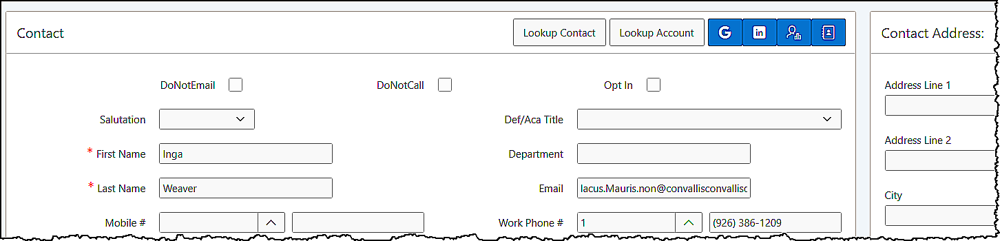
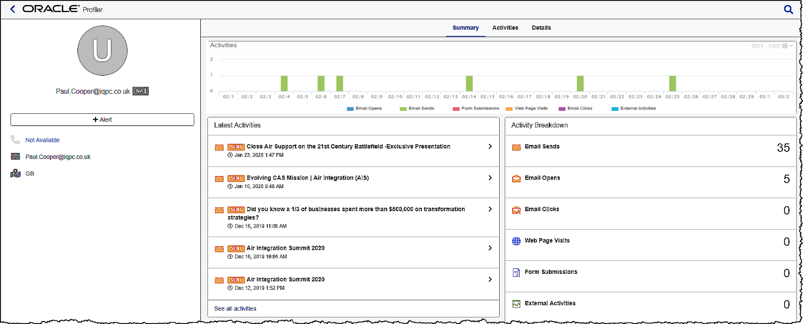
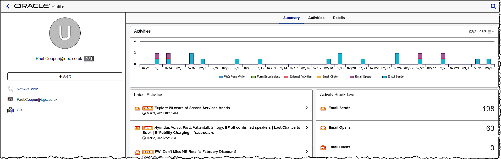
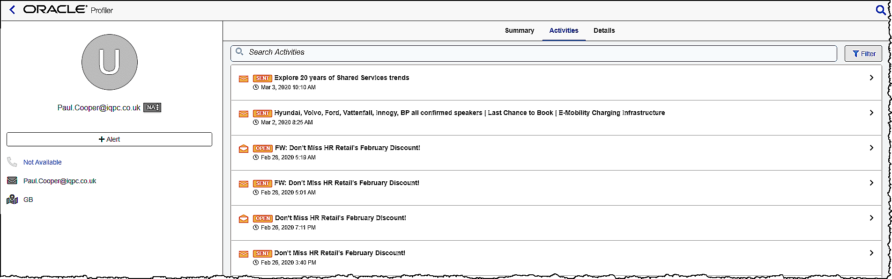
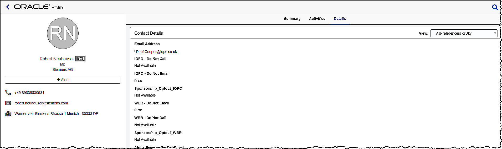

Eloqua Profiler.docx
Eloqua Profiler
The Eloqua Profiler is found in the Contact section of the Opportunity dashboard and displays valuable information about contacts in an easily accessible and data-rich format that can be viewed inside Oracle Sales Cloud
Accessing Eloqua Profiler

- Eloqua Profiler link
Click the Eloqua Profiler link in the Contact section of the Opportunity dashboard
Overview of the Eloqua Profiler

The Eloqua Profiler comprised of 3 main tabs
- Summary
- Activities
- Details
- Summary Tab

This tab presents the contact's activities in the following ways:
Activities Bar chart
The Activities bar chart is a graphical representation of all the contact's activities within a specific date range. You can use the calendar icon in the upper right-hand corner of the graph to change the date range, select 30 days, 6 months, or 1 year as needed.
Latest Activities
This section shows the contact's most recent activities.
Activity Breakdown:
This section provides a breakdown of the contacts activities. These are the same categories that are represented in the activities graph. The activities are grouped based on type. You can select any of the categories and all relevant activities open in the Activities tab, where you can view more details.
Activities are grouped in the following way:
- Emails Sends: The number of emails sent to this contact.
- Emails Opens: The number of times emails were opened by the contact.
- Emails Clicks: The number of times that links in an email were clicked.
- Web Page Visits: Visits to tracked web pages.
- Form Submissions: Number of forms that were submitted by the contact.
- External Activities: Data captured for the contact's non-Eloqua (external) activities, such as attending a webinar, trade show, and so on.
- Activities

This tab shows you all the contact's activities. All events (email sent, email open and so on) are listed with the time and date on which they occurred. Here you can select any event and a thumbnail image will open or select Preview to see activity in more detail.
To view the activities from a specific date, select Filter and enter a date in the Go To Date field, then select Apply Filter to filter the results.
Note: Email preview is available for 120 days after the send date.
- Details

This tab provides you with the contact's details. Contact fields vary depending on the views your administrator has given you access to.
END
Created with the Personal Edition of HelpNDoc: Create help files for the Qt Help Framework